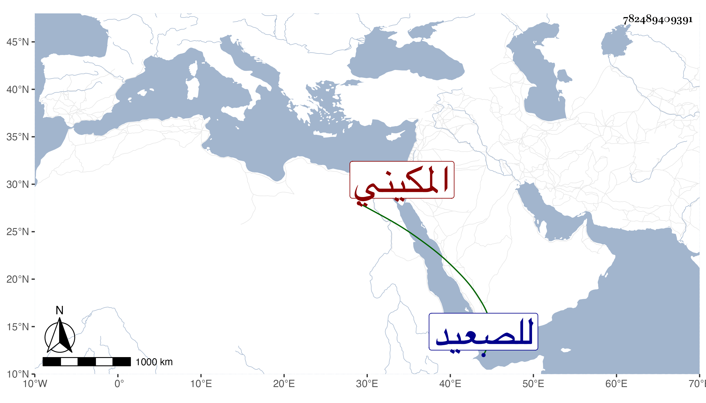

0902Sakhawi.DawLamic.ITO20230111-ara1.EIS1600.782489409391
Biography ID: 782489409391
113
محمد بن أحمد بن محمد بن بركوت جلال الدين بن الصلاح المكيني سبط البدر السمرباي وأخو الذي قبله . نشأ في كنف أبويه وحفظ القرآن والمنهاج الأصلي . ومات مطعونا بعد بلوغه بقليل في سنة اثنتين وثمانين بعد أن اشترك مع أخيه في جهات أبيهما حين سافر للصعيد لأجل تقرير الدوادار الكبير لهما في تدريس الصالح بعناية العلاء الحصني عوضه الله الجنة .
